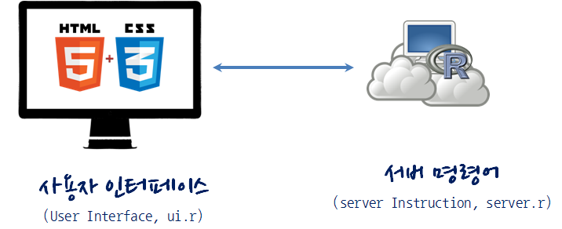

데이터 제품
Shiny 데이터 제품 개발
학습 목표
- Shiny 아키텍쳐를 이해하고, Shiny를 도구로 데이터 제품을 개발한다.
- 데이터 제품개발을 위한 Shiny 주요개념을 숙지한다.
- Shiny 웹앱 제품을 개발하고 배포에 대한 내용을 학습한다.
1. Shiny 학습 목차 1
- Shiny 웹앱
shiny101- shinydashboard 101
shiny제품- 딥러닝(Deep Learning)
1.1. Shiny 전시장(Showcase) 2
D3, Leaflet, 구글 챠트(Google Chart)같은 자바스크립트 라이브러리를 함께 사용해서 다양한 Shiny 응용프로그램을 개발한 사례가 다음에 있다.
1.2. Shiny 응용프로그램 아키텍처
Shiny 응용프로그램 개발 아키텍쳐는 R코드와 UI로 구성된다. 데이터를 서버에서 처리하는 로직을 담고 있는 R코드(server.r)와 사용자 웹인터페이스를 담고 있고 있는 UI(ui.r)다.

1.3. Shiny 생태계 구성원
shiny자체도 의미가 있지만 다양한 shiny 생태계 구성원도 꾸준히 개발되고 있다.
- shinyBS: CSS Bootstrap 컴포넌트.
- Shiny Themes: Shiny 테마
- shinydashboard: 대쉬보드 개발 목적
- shinyjs: 자바스크립트 shiny 적용